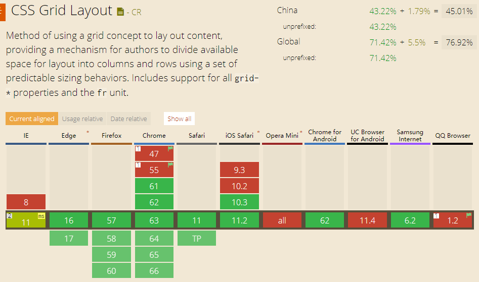
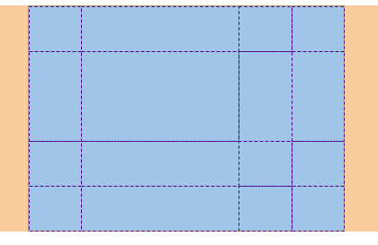
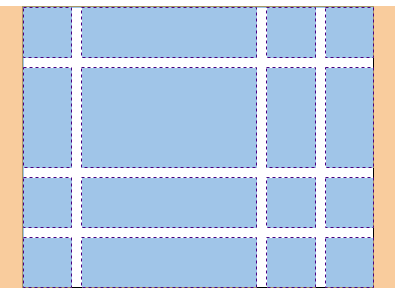
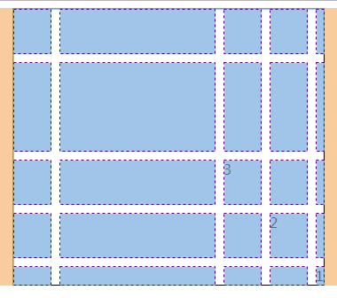
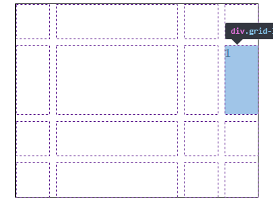

最近时间在了解css3 中不太常用的grid布局，但是却又非常的好用
以前不管我们怎么布局，大多数用的都是一维布局，在复杂的场景下非常难用
而grid使用的是类似与table的二维布局
(grid 兼容情况)
## 一开始父元素声明布局为grid `` .grid{ display:grid; } `` 创建一个4行4列的布局 然后使用grid-template-columns 定义列, grid-template-rous 定义行 `` .grid{ border: 1px solid #000; width: 95%;margin: 0 auto; display:grid; display:grid; grid-template-columns:1fr 1fr 1fr 1fr; grid-template-rows: 20px 20px 20px 20px; } ``用浏览器查看效果（我用的是谷歌）

可以看到已经有4行4列的效果了
可以指定某行的宽度或高度，比如第二列的第二行高度为50px，宽度为50%
 `` grid-template-columns: 1fr 50% 1fr 1fr; grid-template-rows: 20px 50px 20px 20px; ``还可以使用grid-gap给相邻的网络增加缝隙
`` grid-gap:10px; ``  我们在grid容器里写一个grid-list的div `` .grid-list{ grid-column:4; grid-row:2; } `` 可以看到grid-column把位置放在了父容器网格列中的第四列，而grid-row放在了父容器网格行的第二行
如果grid-column定义的值超过父容器定义的值就会增加父容器网格列的数量，但是grid-row定义的值是不会超过父容器的rows+1，这个很奇怪，+1可能是div本身就占了一行（猜的）,而且就算父容器不定义rows也会有一行，比如：
`` .grid-list{ grid-column:7; grid-row:7; } `` 